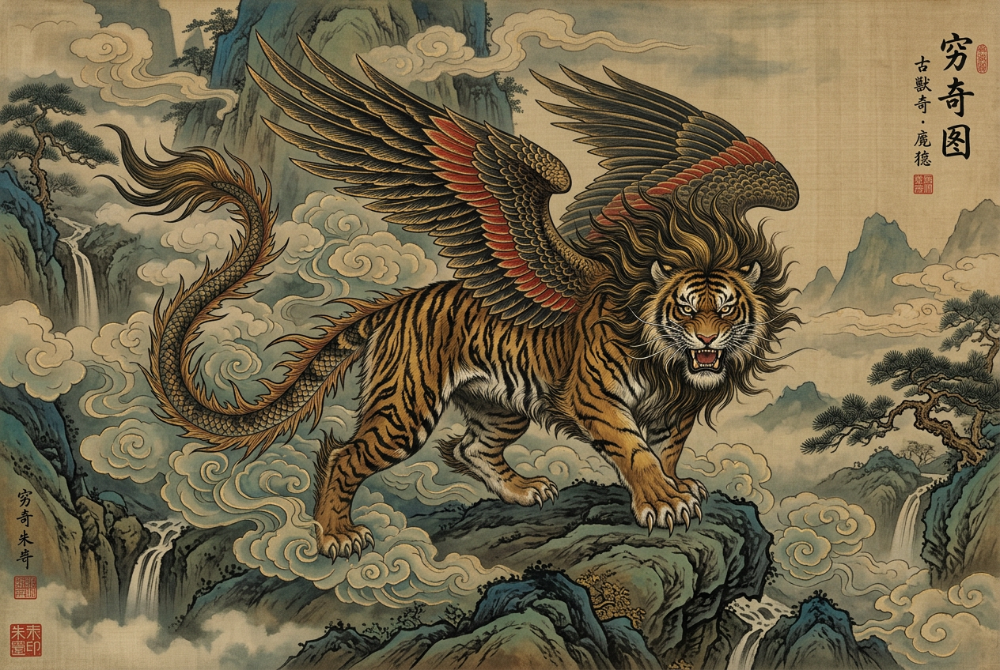

抑善扬恶之兽，四大凶兽之一

文献记载：《山海经·海内北经》《山海经·西山经》《左传》《史记》《淮南子》等多部典籍
核心特征：状如牛（或虎），猬毛，音如獆，食人，抑善扬恶
"又西二百六十里，曰邽。其上有兽焉，其状如牛，猬毛，名曰穷奇，音如獆，是食人。"
解读：
"穷奇状如虎，有翼，食人从首始，所食被发，在蜪北。一曰从足。"
解读：
《左传·文公十八年》：
"少皞有不才子，毁信废忠，崇饰恶言，靖谮回，服谗慝以诬盛德，天下之民谓之穷奇。"
《史记·五帝本纪》：
"穷奇，帝鸿氏之不才子也。掩义隐贼，好行凶慝天下谓之穷奇。"
《淮南子·墬训》：
"穷奇，广莫风之所生也。"
穷奇的形象在《山海经》不同篇章中存在差异，这种差异恰恰反映了古代神话在口耳相传过程中的流变：
牛形版本（《西山经》）：
虎形版本（《海内北经》）：
食人习性：
声音特征：
穷奇的形象融合了多种动物的特征：牛的体型、虎的凶猛、刺猬的防御、狗的叫声、鸟的翅膀。这种"拼贴式"的神兽形象正是《山海经》异兽的典型特征，体现了古人对未知生物的想象力和创造力。
穷奇最引人注目的神异之处，不在于其外形或食人习性，而在于其反道德的行为逻辑：
《神异经·西北荒经》记载：
"西北有兽焉，状似虎，有翼能飞，便剿食人，知人言语。闻人斗，辄食直者；闻人忠信，辄食其鼻；闻人恶逆不善，辄杀兽往馈之。名曰穷奇。亦食诸禽兽也。"
行为逻辑解析：
| 触发情境 | 穷奇的反应 | 道德含义 |
|---|---|---|
| 听闻有人争吵 | 吃掉有理的一方 | 颠倒是非 |
| 听闻有人忠信 | 咬掉其鼻子 | 惩罚善良 |
| 听闻有人作恶 | 猎杀野兽赠送给恶人 | 奖励邪恶 |
这种"抑善扬恶"的设定在中国神话体系中极为罕见，使穷奇成为道德秩序的破坏者和反伦理的象征。
飞行能力：
智慧能力：
战斗力：
穷奇与混沌、梼杌饕餮strong>并称"四大凶兽"，这一说法源自《左传·文公十八年》：
"昔帝鸿氏有不才子，掩义隐贼，好行凶慝天下之民谓之混沌；少皞有不才子，毁信废忠，崇饰恶言，靖谮回，服谗慝以诬盛德，天下之民谓之穷奇；颛顼有不才子，不可教训，不知话言，告之则顽，舍之则嚚傲狠明德，以乱天常，天下之民谓之梼杌此三族也，世济其凶，增其恶名，以至于尧，尧不能去。缙氏有不才子，贪于饮食，冒于货贿，侵欲崇侈，不可盈厌，聚敛积实，不知纪极，不分孤寡，不恤穷匮，天下之民以比三凶，谓之饕餮"
四凶对比：
| 凶兽 | 原型 | 核心恶行 | 象征意义 |
|---|---|---|---|
| 混沌 | 帝鸿氏不才子 | 混淆黑白 | 愚昧无知 |
| 穷奇 | 少皞不才子 | 颠倒是非 | 道德败坏 |
| 梼杌td> | 颛顼不才子 | 不听教诲 | 顽固不化 |
| 饕餮td> | 缙氏不才子 | 贪婪无度 | 欲望失控 |
《史记·五帝本纪》记载，舜帝继位后：
"流共工于幽陵，以变北狄；放驩于崇山，以变南蛮；迁三苗于三危，以变西戎；殛鲧羽山，以变东夷。四罪而天下咸服。"
虽然此处未直接提及四凶，但后世注疏常将四凶与这四位被流放者相对应。穷奇作为少皞的不才子，被舜帝流放至远方，象征着正义对邪恶的惩罚。
在古代驱邪仪式（傩）中，穷奇常被作为驱除的对象：
《后汉书·礼仪志》记载的傩中，有"十二神"追捕"穷奇、腾根"等恶兽的环节，反映了古人通过仪式驱逐邪恶、祈求平安的文化心理。
在《山海经》《左传》等早期文献中，穷奇主要作为地理志怪和道德警示的形象出现：
汉代文献（如《史记》《淮南子》《神异经》）进一步强化了穷奇的道德象征意义：
穷奇逐渐进入文学创作领域：
学术研究：
流行文化：
文化意义转变：
穷奇的行为逻辑看似荒诞，实则反映了人类心理中的某些深层机制：
逆向心理：
道德相对主义：
《海内北经》中"所食被发"的记载值得玩味：
历史背景：
象征意义：
有趣的是，穷奇的"抑善扬恶"行为与网络时代的某些现象惊人相似：
共同特征：
穷奇可以说是古代的"网络喷子"原型，这种跨越千年的"共鸣"恰恰说明人性中某些阴暗面是共通的。
穷奇的形象与西方文学中的"反英雄"（Anti-hero）有异曲同工之妙：
相似之处：
差异之处：
穷奇的"拼贴式"外形（牛/虎 + 刺猬毛 + 翅膀 + 狗叫声）体现了古代设计师的创意法则：
设计原则：
这种设计思路在现代游戏、影视的角色设计中依然被广泛运用。
穷奇作为《山海经》中最具争议的神兽之一，其形象跨越了从地理志怪到道德符号、从文学意象到流行文化的多重维度。它不仅是古人想象力的结晶，更是人类对"恶"的本质进行哲学思考的载体。
在当代语境下，穷奇的形象获得了新的生命力：它不再仅仅是被驱逐的"凶兽"，而是成为探讨道德相对性、人性复杂性和文化多样性的思想实验。正如穷奇本身所暗示的那样——善恶的边界，或许比我们想象的更加模糊。